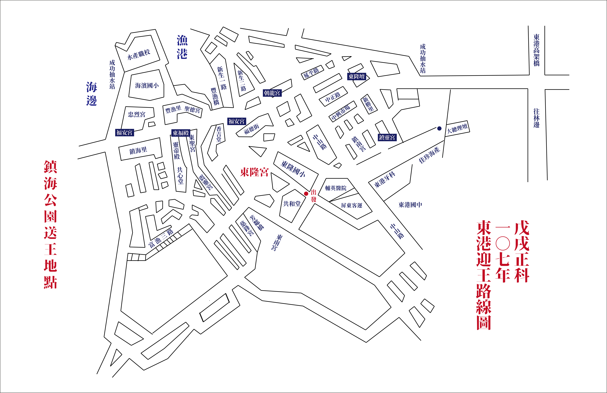

文／張庭瑀 圖／葉峻瑀
鑼鼓喧天，耳邊傳來陣陣鞭炮聲響，身穿各色清代傳統服飾的轎班手持長香、排成人龍，在東港的街道上護送代天巡狩的「盧大千歲爺」前進。三年一次「東港迎王平安祭典」（以下簡稱迎王祭）於4日凌晨，在「燒王船」儀式的火海中劃下句點。
深夜的東港頭擠滿上萬人潮、燈火通明，每逢迎王祭民眾徹夜未眠，只為親眼見證恭送王爺的盛景。「迎王，是東港人的宿命；傳承，是年輕世代的使命；我的轎班身分，便是與王爺的約定。」國立中山大學社會學系學生梁竣雅為東港頂中街轎班的一份子，他認為迎王祭不單是「燒王船」可以詮釋的慶典。信眾從迎王到送王，遵照古法、依循舊有禮節辦理，凸顯了東港居民對千歲爺虔誠街的心。
轎班人員護送兩層樓高的王船到鎮海公園進行「送王」儀式，
動員人數龐大，場面壯觀，令人歎為觀止。
「有些人期待三年，是為了看這八天的熱鬧；但東港人卻是準備了三年，只為迎接千歲爺蒞臨。」梁竣雅表示這是東港人的共同目標，也是展現團結一心的時刻。東港人為此祭典，用了三年的時間造船，10月28日起為期八天的遶境遊行，將傳統民俗的精髓演繹到了極致。七角頭埔仔角的轎班林家弘表示，迎王祭不僅增進對家鄉的歸屬感，也更堅定自身信仰。2010年，文化部指定「東港迎王平安祭典」為國家重要民俗文化活動，部分學校會特別為迎王祭放假。迎王祭之於東港人的重要性，不言而喻。
在傳統文化逐漸沒落的現代，年輕人大多對民俗慶典冷漠，然而每三年一次的迎王祭，至今仍吸引許多東港遊子歸鄉。國立高雄大學運動健康與休閒學系學生林志穎說：「對東港人而言，迎王祭除了是一種信仰，更是一顆定心丸。」國立嘉義大學中國文學系學生許采瑄則認為，迎王祭讓遊子們有個必須回家的理由。
迎王時挨家挨戶會掛上燈籠，
今年是中國傳統紀年農曆的戊戌年， 因此燈籠上印有戊戌字樣。
沙灘上，此起彼落的鞭炮聲不絕於耳，信眾以煙火歡迎千歲爺的到來。半層樓高的金紙與供品堆疊在王船之下，儀式開始後一同被火海吞噬。然而，根據全國宗教資訊網的資料指出，船身的漆料加上金紙、香與供品，在焚燒過程中會產生大量的空氣染外，殘留的灰燼所造成的污水直接流入海中，恐怕影響海洋生態以及水質。
雖迎王祭面對環境議題與信仰的衝突，但返鄉青年多傾向延續傳統。國立中興大學土壤環境科學系學生孔郁喻提到，為了表達對神明的尊敬，民眾大量使用鞭炮和金紙，這部分的傳統難以用維護環境的理由來減少使用量。但對於污染問題，祭典已逐年改善，國立臺中科技大學國際貿易經營系學生孫千雯便有深刻感受，他指出在今年迎王祭中，部分民眾以電子鞭炮代替傳統鞭炮，「有了環保鞭炮機，炮灰相較之前已經少了很多。」民眾已意識到環境的重要性而做出改變。

迎王祭的「遷船遶境」，從東隆宮繞行東港。
許多民眾群聚在門口，一睹船出宮的樣貌，場面頗為壯觀。
近來，迎王祭近年成為台灣的觀光盛事，不少外國遊客特地去到現場，體驗東港淬煉已久的宗教文化。從美國來台灣教書的遊客凱蒂・卡森（Catie Carson）表示，從同事口中得知迎王祭而來參加，「我們的國家沒有傳統文化，所以特別喜歡參加這樣的祭典。」來自荷蘭的吉榮・史密茨（Jeroen Smits）則是首次參與迎王祭。他認為王船遶境極具特色，東港居民普天同慶的熱鬧氛圍十分吸引人，「因為要工作的緣故，無法看到燒王船，下次有機會一定要再來。」